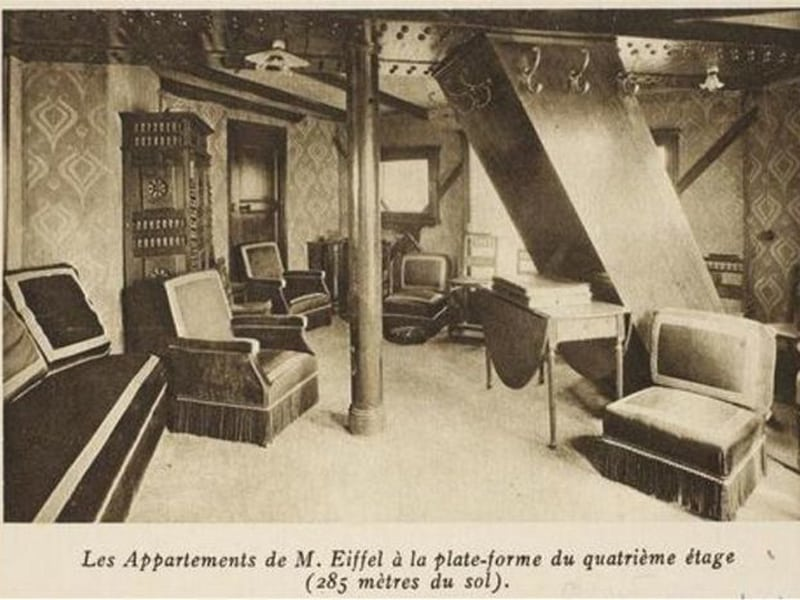

Torre Eiffel
| Altura | 324m |
|---|---|
| Localização | Paris, França |
| Inalguração | 1889 |
Esta incrível torre de ferro foi construída no centro de Paris, tendo sua inauguração em 1889. O governo Francês propôs uma competição entre engenheiros para decidir qual planta enfeitaria o Campo de Marte e o vencedor foi Gustave Eiffel por ser o único com o projeto que atendia a todos os requisitos.
Construída em homenagem ao Centenário da Revolução Francesa, a Torre originalmente ficaria por um tempo e depois seria desmontada, o que não aconteceu, pois o plano de Gustave era transformá-la em uma antena de rádio, tecnologia que estava sendo desenvolvida na época.
Direitos Autorais
A Torre Eiffel tem toda superfície coberta por lâmpadas e ao anoitecer elas são ligadas, mas O Governo Francês diz que por ser uma obra de arte, ela tem direitos autorais e qualquer um não pode tirar uma foto da Torre Eiffel à noite, uma empresa específica deve ser contratada.
Apartamento Secreto
O topo da torre tem um pequeno apartamento, simples e aconchegante bem decorado onde apenas as pessoas que Gustave Eiffel permitia podiam utilizá-lo.
Localização